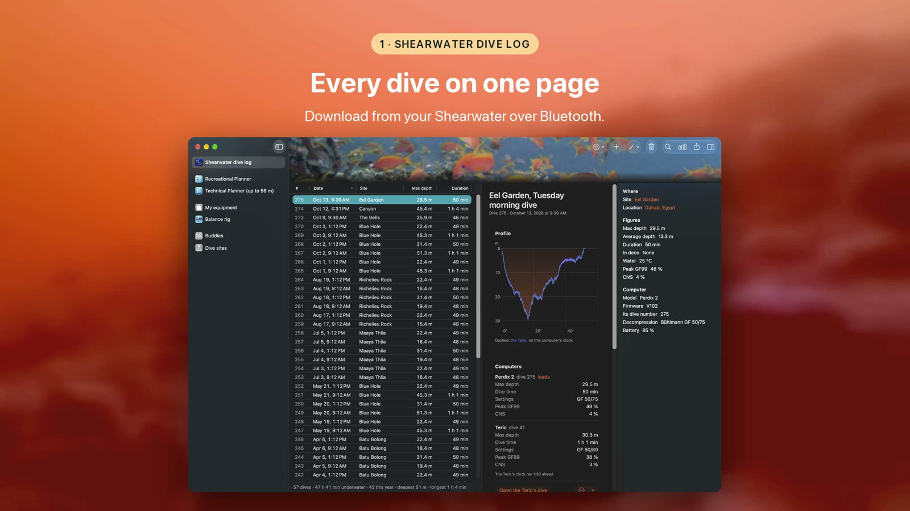
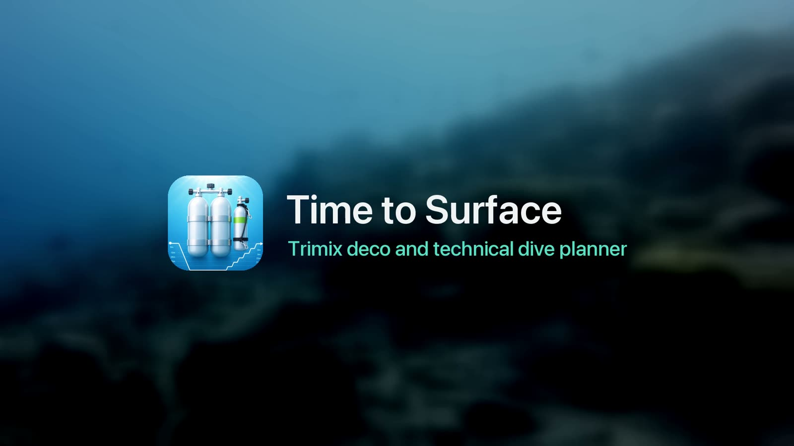
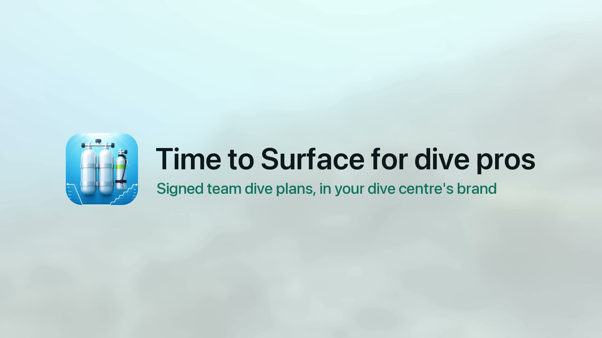
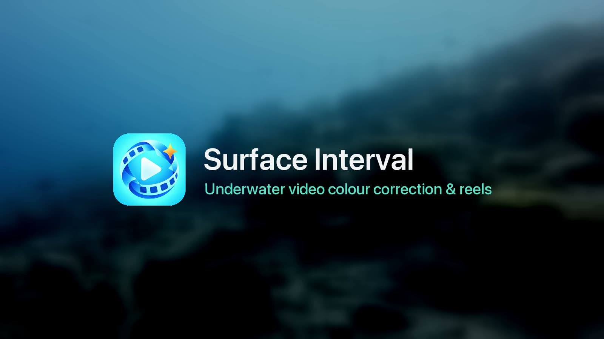
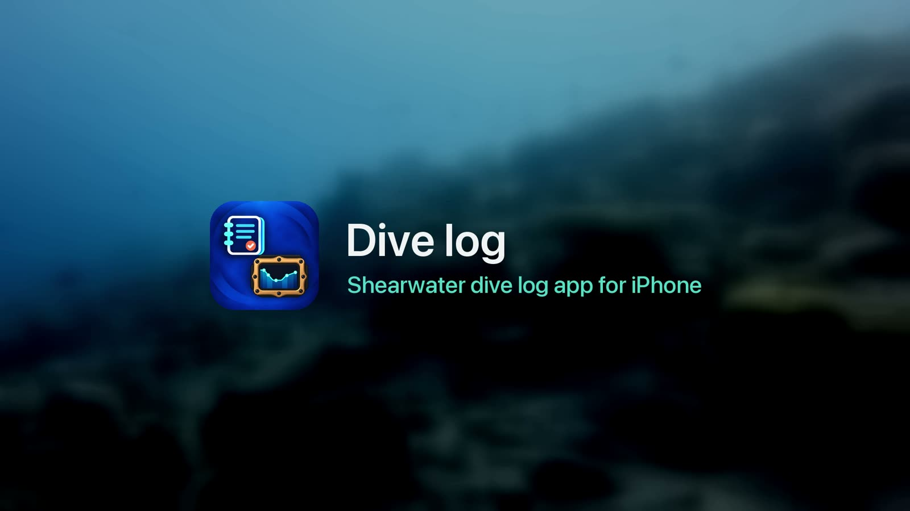
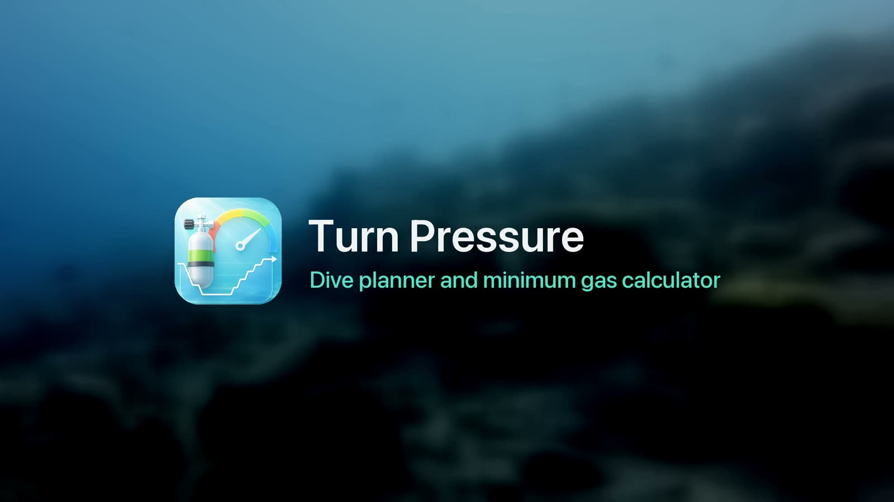
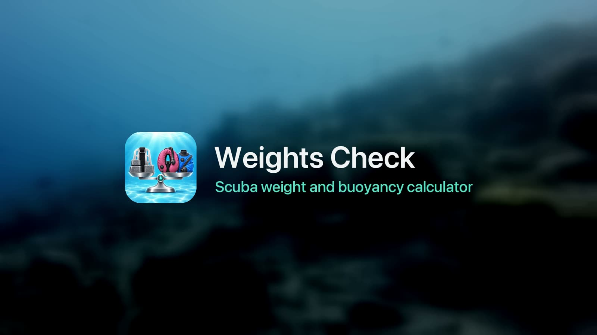

Surface consumption rate (SCR)
Calculate your SCR, also called SAC, from any dive, step by step, in about two minutes.
These apps help with gas planning, decompression, weighting, your Shearwater's log and your dive videos, on iPhone and Mac. A diver built them. They need no account, and they have no ads and no tracking. You enter your data once, and every app knows it through your own iCloud.
These short episodes explain gas planning and weighting in plain words. Each one answers one question and finds the answer step by step on one example. Each episode has its full transcript on its own page.
Calculate your SCR, also called SAC, from any dive, step by step, in about two minutes.
Calculate the gas for a dive with C × A × T, step by step, in about two and a half minutes. Your tank pressure must cover the gas for the dive plus minimum gas.
Calculate the gas two divers need to ascend from the deepest point on one tank, step by step, in about three minutes.
Find the lead you need, how heavy the rig is at the start, and where the lead goes for trim, step by step, in under two minutes.


Your iPhone dive apps on the Mac, with the same data
Everything your iPhone apps do, on the Mac, in one window. Diver.Today covers the features of Dive log, Turn Pressure, Time to Surface and Weights Check, and it uses the same data as they do. Change a dive, a buddy, a rig or a plan on your Mac and it appears on your iPhone and in the other apps in real time, and the other way round.







Scuba weight and buoyancy calculator
Weights Check helps you calculate buoyancy for your equipment and keep track of your weights and configurations. Record a weight check and the calculator adjusts to your own numbers. Your rigs, gear and checks are in your own iCloud, and the dives you link in Dive log are listed on each rig’s page*. It is free, works offline and needs no account.
All your data is in your own iCloud, on every iPhone and Mac you sign in to and in every Diver.Today app, in real time. You enter it once.
* Arrives with Dive log, now in Apple review. The other four apps and their iCloud sharing are on the App Store now.